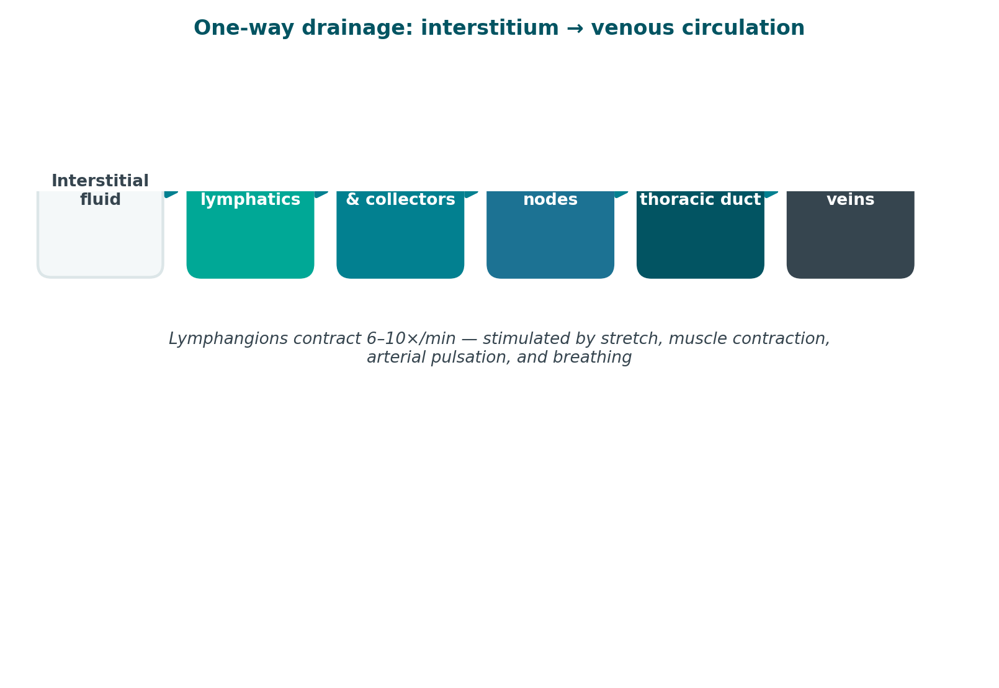
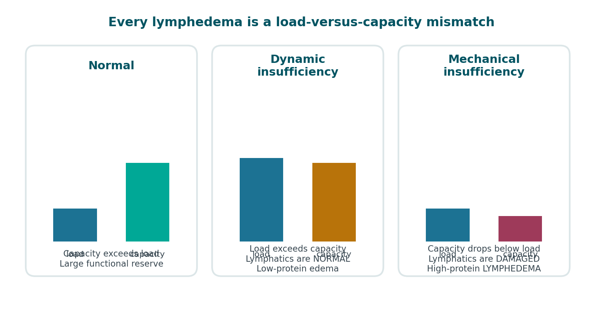
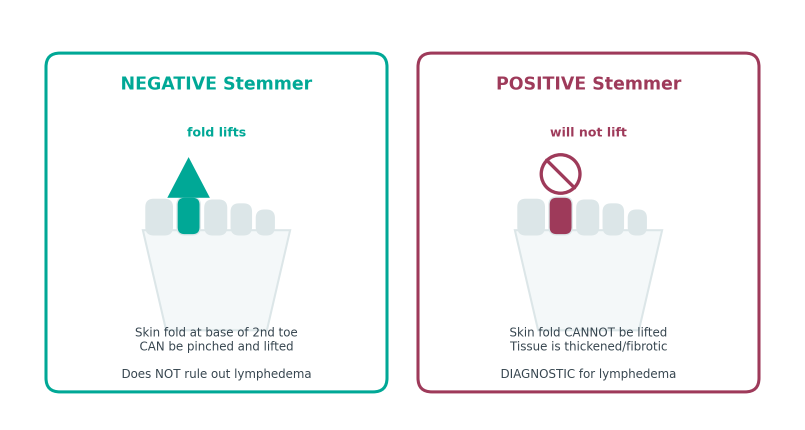
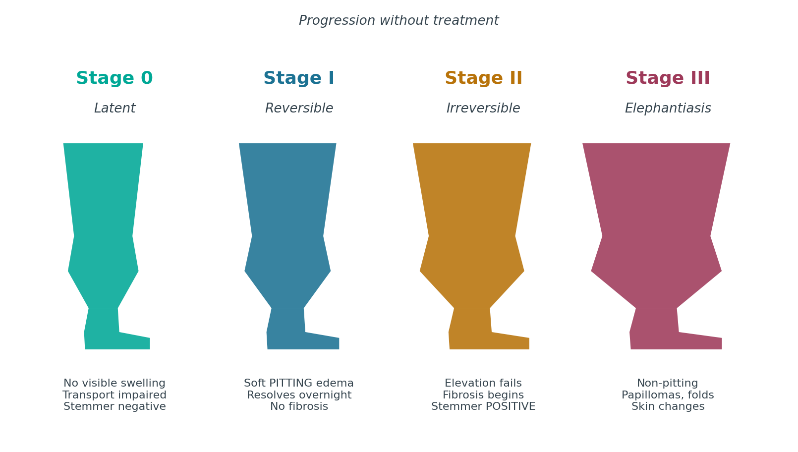
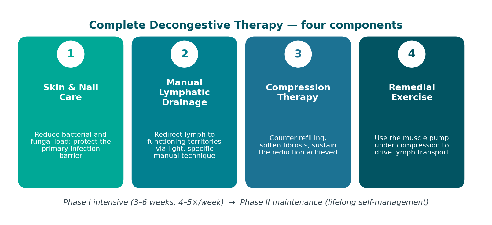
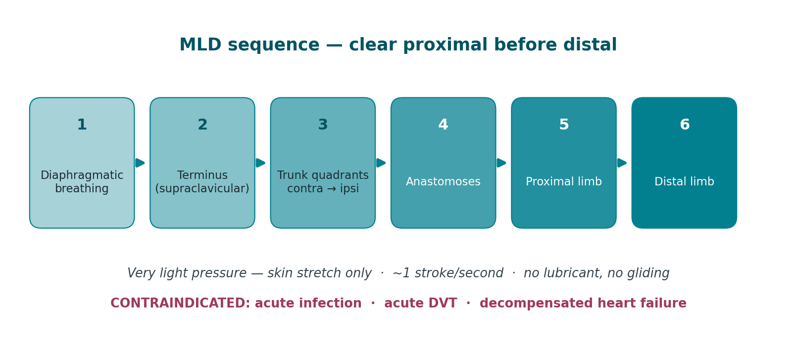
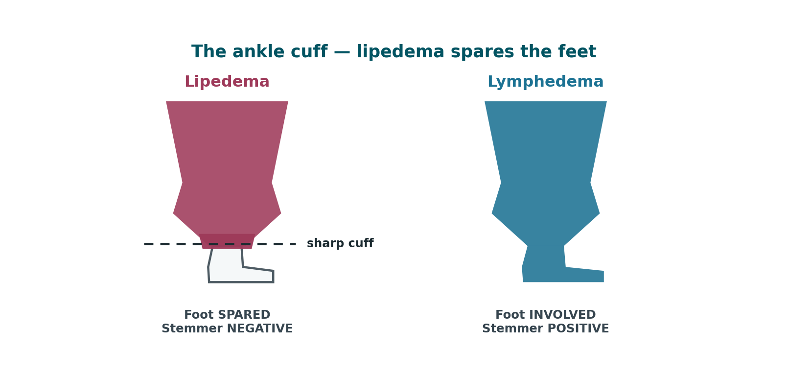
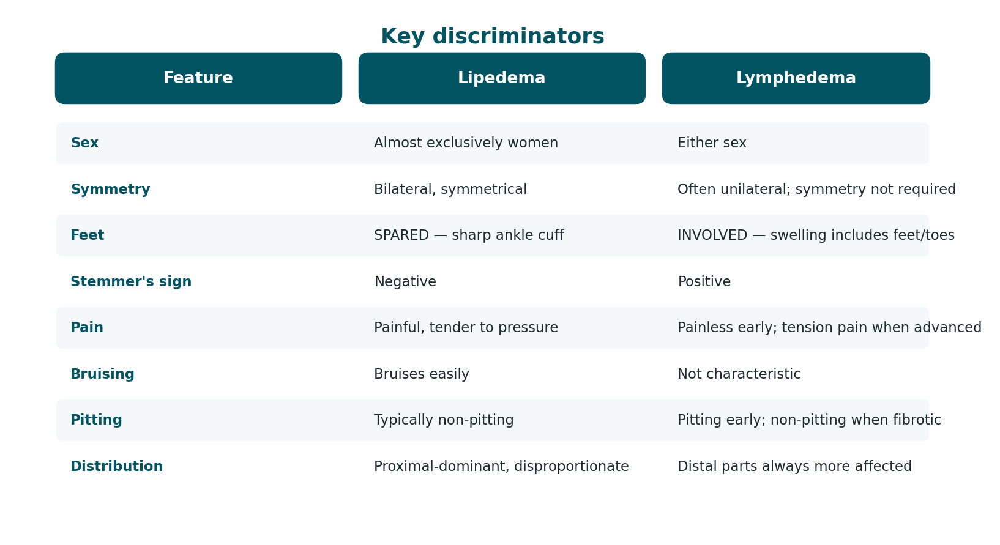

Follow along
Scan to open this presentation on your own device
PowerPoint deck
The same material as an editable 32-slide presentation, with speaker notes. Optional slides are flagged in the notes.
About Total Body Therapy & Wellness
Founded in Lillington, NC in 2008 with the goal of bringing exceptional "Big City Care" to a small-town community. Physical therapy in Harnett County since 2002.
- Patient-centered, one-on-one treatment every visit
- Certified Lymphedema Therapists (CLT) on staff
- Whole-person approach — we treat the total body, not just the part
- Patient education as a core part of the plan of care
On completion you will be able to
- Describe the structure and function of the lymphatic system
- Differentiate primary from secondary lymphedema and identify risk factors
- Recognize the symptomatology and clinical presentation of lymphedema
- Perform and interpret key diagnostic tests, including Stemmer's sign
- Stage lymphedema using ISL criteria, Stage 0 through Stage III
- Apply the four components of Complete Decongestive Therapy
- Distinguish lipedema from lymphedema and stage lipedema appropriately
- Identify red flags requiring physician referral
The Lymphatic System
A one-way drainage network running parallel to the venous system, returning fluid, protein, and immune cells to circulation.

Three jobs
- Fluid balance — returns roughly 2–4 L of interstitial fluid to the bloodstream daily
- Protein transport — the only route by which large interstitial proteins return to circulation
- Immune surveillance — lymph nodes filter pathogens and host lymphocytes
The pathway
- Initial lymphatics (blind-ended capillaries) collect interstitial fluid
- Precollectors and collectors move lymph via lymphangions — segments that contract 6–10x/min
- Regional lymph nodes filter the load
- Trunks drain to the thoracic duct (left, and entire lower body) and right lymphatic duct
- Both empty at the subclavian veins — back into venous circulation
Lymph Load vs. Transport Capacity
Every case of lymphedema is a mismatch between how much fluid needs to move and how much the system can move.

The three states
- Normal — transport capacity comfortably exceeds lymph load. Large functional reserve.
- Dynamic insufficiency — normal lymphatics, but load exceeds capacity. This is ordinary edema (CHF, venous insufficiency, hypoproteinemia). Low protein.
- Mechanical insufficiency — capacity drops below even a normal load. This is lymphedema. High protein.
Why the protein matters
- Retained interstitial protein is osmotically active — it pulls in more water
- It triggers chronic inflammation and fibroblast activity
- That fibrosis further reduces transport capacity — a self-reinforcing loop
- This is why untreated lymphedema progresses, and why early intervention changes the trajectory
Primary vs. Secondary Lymphedema
Primary lymphedema arises from congenital lymphatic dysplasia. Secondary lymphedema follows anatomical disruption of a previously normal system.
Primary — developmental
- Congenital — present at birth or within the first 2 years. Includes Milroy disease.
- Praecox — onset at puberty through age 35. The most common primary form.
- Tarda — onset after age 35
- Mechanisms: aplasia, hypoplasia, hyperplasia, or valvular incompetence of lymphatics
Secondary — acquired
- Cancer treatment — lymph node dissection and/or radiation. The leading cause in developed countries.
- Filariasis — Wuchereria bancrofti. The leading cause worldwide.
- Trauma or surgery — burns, vein harvest, orthopedic procedures
- Chronic venous insufficiency — progresses to phlebolymphedema
- Recurrent infection — each episode of cellulitis causes further lymphatic damage
- Obesity — central obesity significantly raises risk independently
Symptomatology
Subjective symptoms frequently precede visible swelling by months. Do not wait for a measurable difference to take a patient seriously.
Early — often reported before anything is visible
- Heaviness, fullness, or tightness in the limb
- Clothing, sleeves, rings, or shoes fitting differently
- Aching or discomfort without a clear mechanical cause
- Reduced flexibility at the wrist, hand, or ankle
- Transient swelling that resolves overnight
Established
- Persistent swelling, initially distal, that no longer resolves with elevation
- Pitting edema — later becoming non-pitting as fibrosis develops
- Skin feels thickened, firm, or leathery
- Positive Stemmer's sign
- Deepened natural skin folds
- Recurrent cellulitis
Do not overlook
- Psychosocial burden — body image, clothing, social withdrawal, anxiety
- Functional loss — grip, reach, gait, footwear, ADLs
- Occupational impact and cost of ongoing garments
Diagnosis and Measurement
Diagnosis is primarily clinical. History and physical examination identify the great majority of cases.

History
- Onset, duration, progression, and whether it resolves overnight
- Surgical and oncologic history — nodes removed, radiation fields
- Infection history — every episode of cellulitis
- Family history (suggests primary lymphedema or lipedema)
- Travel history (filariasis), cardiac, renal, and hepatic history
Physical examination
- Stemmer's sign — attempt to pinch and lift the skin fold at the base of the 2nd toe or finger. Cannot lift = positive = lymphedema. Positive is diagnostic; negative does not rule it out.
- Pitting assessment — depth and rebound time, graded 1+ to 4+
- Skin inspection — texture, temperature, color, papillomas, fissures, wounds, fungal infection between digits
- Bilateral comparison — symmetry, foot involvement, where the swelling stops
Objective measurement
- Circumferential tape — at fixed 4 cm intervals from a bony landmark. Low cost, good reliability if landmarks are consistent.
- Volumetry — water displacement. Historically the gold standard; impractical with open wounds.
- Perometry — infrared optical scanning. Fast and reproducible.
- Bioimpedance spectroscopy (L-Dex) — detects extracellular fluid change; can identify subclinical Stage 0.
Imaging — when the picture is unclear
- Lymphoscintigraphy — the imaging standard for confirming lymphatic dysfunction
- ICG lymphography — maps superficial lymphatics; guides MLD and surgical planning
- Duplex ultrasound — rule out DVT and venous insufficiency
- MRI / CT — rule out malignancy or extrinsic compression
What Else Swells a Limb
Before you treat it as lymphedema, rule these out.
| Condition | Distinguishing features |
|---|---|
| Deep vein thrombosis | Acute unilateral onset, pain, warmth, erythema. URGENT — do not perform MLD. |
| Chronic venous insufficiency | Hemosiderin staining, varicosities, medial malleolar ulceration, improves with elevation |
| Congestive heart failure | Bilateral, dependent, pitting, dyspnea, JVD, orthopnea |
| Hypoproteinemia | Bilateral, generalized, may include ascites/periorbital edema |
| Lipedema | Bilateral, symmetrical, painful, bruises easily, SPARES THE FEET, negative Stemmer |
| Malignant lymphedema | Rapid onset, pain, proximal-first, neurologic signs. Requires imaging. |
| Cellulitis | Fever, spreading erythema, heat, pain. Antibiotics first — MLD contraindicated. |
| Medication-induced | Calcium channel blockers, NSAIDs, steroids, gabapentin, some diabetes drugs |
Scroll the table sideways on a phone.
ISL Staging — Overview
The International Society of Lymphology defines four stages. Stage 0 is latent — the lymphatics are already impaired before anything is visible.

Latent / Subclinical
Lymph transport is already impaired. No visible swelling. May persist for months or years before progressing.
Findings
- No visible or palpable edema
- Subjective heaviness, tightness, or fullness may be reported
- Reduced transport capacity detectable by bioimpedance or lymphoscintigraphy
- Normal tissue consistency
- Negative Stemmer's sign
PT implications
- This is the highest-value window for intervention
- Baseline measurement pre-operatively makes this stage detectable at all
- Surveillance program, risk-reduction education, early compression if indicated
- Prophylactic PT after node dissection has been shown to reduce progression
Spontaneously Reversible
Early accumulation of protein-rich fluid. Swelling reduces with elevation — often resolving completely overnight.
Findings
- Soft, pitting edema
- Subsides with elevation; frequently gone by morning
- No secondary tissue changes — no fibrosis yet
- Stemmer's sign usually negative
- Limb feels heavy; may be visibly larger by end of day
PT implications
- Highly responsive to CDT
- Compression garments often sufficient for maintenance
- Patient education on self-management is decisive here
- Goal: prevent the transition to fibrosis
Spontaneously Irreversible
Elevation alone no longer reduces the swelling. Lymphostatic fibrosis has begun and the tissue is changing character.
Findings
- Elevation rarely reduces the limb
- Early Stage II — pitting is manifest and pronounced
- Late Stage II — pitting may be absent as fibrosis replaces fluid
- Tissue feels firm; Stemmer's sign becomes positive
- Increasing frequency of cellulitis
- Skin thickening becomes apparent
PT implications
- Full intensive-phase CDT is indicated
- Fibrosis requires manual work plus foam/chip padding under bandaging
- Realistic goal is volume reduction and stabilization, not cure
- Aggressive infection-prevention education
Lymphostatic Elephantiasis
Extreme volume increase with characteristic trophic skin changes. Pitting is typically absent.
Findings
- Marked volume increase and limb distortion
- Pitting absent
- Trophic skin changes — acanthosis, hyperkeratosis
- Papillomas and warty overgrowth
- Deep skin folds, fat deposition
- Lymphorrhea — weeping of lymph fluid through the skin
- Strongly positive Stemmer's sign
- Frequent, sometimes life-threatening infection
PT implications
- Extended intensive phase; often requires wound care alongside CDT
- Meaningful volume reduction is still achievable — do not write these patients off
- Multilayer bandaging with substantial padding
- Coordinate with physician; surgical options may be considered after conservative management
Complete Decongestive Therapy
CDT is the internationally accepted standard of care. It has four components, delivered in two phases.

Phase I — Intensive / Reductive
- Typically 3–6 weeks, treatment 4–5x/week, sessions 1–2 hours
- MLD, multilayer short-stretch bandaging worn 23 hours/day, exercise, skin care
- Re-measure at every visit
- Ends when volume plateaus across consecutive sessions
Phase II — Maintenance / Self-Management
- Fitted compression garment during the day; night garment or bandaging as needed
- Self-MLD and home exercise program
- Daily skin care and self-inspection
- Ongoing surveillance; garments replaced every 4–6 months
- Return for a short intensive phase if the limb regresses
Skin & Nail Care
Reduce bacterial and fungal load; protect the primary infection barrier
Manual Lymphatic Drainage
Redirect lymph to functioning territories via light, specific manual technique
Compression Therapy
Counter refilling, soften fibrosis, sustain the reduction achieved
Remedial Exercise
Use the muscle pump under compression to drive lymph transport
Skin & Nail Care
A lymphedematous limb is immunocompromised tissue. The skin is the last barrier, and every infection causes further lymphatic damage.
Daily routine
- Wash with low-pH, fragrance-free cleanser — lymphedematous skin is alkaline-shifted
- Dry thoroughly, especially between the toes and in skin folds
- Apply low-pH emollient to keep the barrier intact
- Inspect the entire limb daily, including between digits and the posterior surface
Prevention
- Treat tinea pedis and onychomycosis aggressively — a common cellulitis entry point
- Nails cut straight across; avoid cutting cuticles
- Avoid blood draws, IVs, and BP cuffs on the at-risk limb where an alternative exists
- Protect during gardening, cooking, pet handling; gloves and insect repellent
- Prompt antiseptic care for any break in the skin
Teach the patient to recognize cellulitis
- Spreading redness, heat, tenderness, sudden limb enlargement
- Fever, chills, malaise, flu-like onset
- Seek care same-day. Stop MLD and compression until treated.
- Recurrent cellulitis may warrant prophylactic antibiotics — physician decision
Manual Lymphatic Drainage
A specific, very light manual technique that stimulates lymphangion contraction and redirects lymph across watersheds into functioning territories.

Technique principles
- Very light pressure — stretches skin only. Heavy pressure collapses initial lymphatics and is counterproductive.
- Slow, rhythmic — roughly one stroke per second, matching lymphangion contraction rate
- Clear proximal before distal. Empty the receiving area first or there is nowhere for fluid to go.
- Begin with the neck/terminus, then trunk quadrants, then the affected limb
- Work root-to-tip to clear, then tip-to-root to drain
- Skin must move with the hand — no gliding, no lubricant
Sequence for an affected limb
- Diaphragmatic breathing — drives thoracic duct flow
- Terminus (supraclavicular) clearing
- Contralateral, then ipsilateral trunk quadrants
- Anastomoses — axillo-axillary, axillo-inguinal, inguino-inguinal
- Proximal limb, then progressively distal
- Finish with a distal-to-proximal drainage sequence
Contraindications
- Acute cellulitis or active infection
- Acute DVT
- Decompensated congestive heart failure
- Acute renal failure
- Caution with active untreated malignancy — coordinate with oncology
- Caution with carotid sinus hypersensitivity for neck work
Compression Therapy
The single most important component for maintaining reduction. Without compression, gains from MLD reverse within hours.
Phase I — short-stretch bandaging
- Short-stretch bandages: low resting pressure, high working pressure
- Never use long-stretch/ACE — high resting pressure risks a tourniquet effect
- Layered: stockinette, digit wrap, padding, then short-stretch
- Foam or chip padding over fibrotic areas to soften tissue
- Gradient must be higher distally than proximally
- Worn 23 hours/day, reapplied at each visit
Phase II — garments
- Class 1: 20–30 mmHg — mild/early, upper limb, prophylaxis
- Class 2: 30–40 mmHg — most lower limb lymphedema
- Class 3: 40–50 mmHg — severe lower limb
- Flat-knit generally preferred over circular-knit for lymphedema — better containment, no tourniquet at folds
- Custom fit for irregular limb shape
- Replace every 4–6 months; two garments so one is always clean
Precautions
- Check arterial status. ABI < 0.8 requires caution; < 0.5 is a contraindication to standard compression.
- Decompensated heart failure — sudden fluid return can precipitate overload
- Acute DVT, acute infection, severe peripheral neuropathy
- Recheck skin integrity at every application
Remedial Exercise
The skeletal muscle pump is a primary driver of lymph transport. Exercise performed under compression is decongestive therapy.
Principles
- Always perform with compression in place — bandages or garment
- Begin with diaphragmatic breathing to open the thoracic duct
- Proximal to distal — clear the trunk and proximal limb first
- Slow, rhythmic, controlled; no breath-holding or Valsalva
- Low resistance, higher repetition
- End with elevation and further breathing
Programme components
- Diaphragmatic breathing — 5–10 repetitions to start and finish
- Cervical and shoulder girdle mobility (upper limb cases)
- Trunk and core activation
- Active ROM progressing proximal to distal through the limb
- Ankle pumps and calf work for lower limb cases
- Aerobic conditioning — walking, cycling, aquatic therapy
The resistance training question — settled
- Slowly progressive resistance training does not cause or worsen lymphedema
- The PAL trial demonstrated safety in breast cancer survivors
- It may reduce flare incidence and improve limb symptoms
- Progress gradually, wear compression, monitor and stop for symptom change
- Do not tell patients to avoid using the limb. That advice is outdated and causes deconditioning.
Lipedema — A Different Disease
A chronic disorder of adipose tissue, almost exclusively affecting women, routinely misdiagnosed as obesity or lymphedema for years before recognition.

Defining features
- Bilateral and symmetrical fat deposition — legs, hips, buttocks, sometimes arms
- Painful — tenderness, aching, pressure sensitivity. This is diagnostic, not incidental.
- Bruises easily — capillary fragility
- Spares the feet — a sharp cuff or 'bracelet' at the ankle
- Disproportionate — lower body markedly larger than trunk
- Diet-resistant — the affected fat does not respond to caloric restriction or exercise
- Negative Stemmer's sign (until lymphatic involvement develops)
Etiology
- Cause is unknown; strong familial pattern suggests genetic contribution
- Hormonally triggered — onset and acceleration cluster at puberty, pregnancy, and menopause
- Evidence points toward a connective tissue disorder component
- Reported in up to ~11% of women
- Men are affected rarely, usually with hormonal alteration
Why the misdiagnosis matters
- Patients are frequently told to lose weight — which does not resolve the affected fat
- Years of unnecessary shame and ineffective treatment
- Delayed diagnosis allows progression toward lymphatic involvement
- A correct diagnosis is itself therapeutic — it reframes the patient's understanding
Lipedema Staging
Classically staged 1 through 3 by skin and tissue architecture. A fourth stage — lipo-lymphedema — is widely used clinically but is contested.
Smooth skin surface
- Skin surface normal and smooth
- Enlarged hypodermis; homogeneous thickening of subcutaneous tissue
- Fat is often soft; small nodules may be palpable — described as rice-like or pearl-sized
- Fat accumulation around pelvis, buttocks, and hips
- Limbs tender and prone to bruising
- Swelling may improve with rest and elevation
Uneven, dimpled skin
- Skin surface becomes bumpy and wave-like with indentations
- Nodular structures in the thickened subcutis — lipomas, angiolipomas
- Subcutaneous tissue feels tougher and more nodular
- Fat build-up extends down the legs toward the ankles
- Swelling less responsive to rest and elevation than Stage 1
- Symptoms range from mild to severe
Large deformations
- Further hardening of connective tissue
- Bulky, overhanging extrusions of skin and fat
- Marked deformation of thighs and around the knees
- Persistent swelling not resolving with rest or elevation
- Mobility significantly impaired; highest rate of orthopedic complication
- May be associated with secondary lymphedema
Lipo-lymphedema
- Lipedema plus secondary lymphedema in the same limbs
- The feet begin to swell — the defining change
- Stemmer's sign becomes positive
- Skin over the toes thickens; pitting appears
- Diagnosis moves from lipedema to lipo-lymphedema
- Lymphoscintigraphy can document the degree of drainage impairment
Lipedema vs. Lymphedema
The differential that matters most in practice — and the one most often gotten wrong.

| Feature | Lipedema | Lymphedema |
|---|---|---|
| Sex | Almost exclusively women | Either sex |
| Symmetry | Bilateral, symmetrical | Often unilateral; symmetry not required |
| Feet | SPARED — sharp ankle cuff | INVOLVED — swelling includes feet/toes |
| Stemmer's sign | Negative | Positive |
| Pain | Painful, tender to pressure | Painless early; tension pain when advanced |
| Bruising | Bruises easily | Not characteristic |
| Pitting | Typically non-pitting | Pitting early; non-pitting when fibrotic |
| Distribution | Proximal-dominant, disproportionate | Distal parts always more affected |
| Family history | Commonly positive | Positive only in primary lymphedema |
| Response to diet | Affected fat is diet-resistant | Not primarily fat; weight loss reduces risk |
| Onset trigger | Puberty, pregnancy, menopause | Surgery, radiation, infection, trauma |
Scroll the table sideways on a phone.
PT Management of Lipedema
Conservative management does not remove lipedema fat. It manages pain, controls fluid, preserves mobility, and slows progression.
What PT can achieve
- Pain reduction — often the patient's highest priority
- Control of any fluid component through MLD and compression
- Preservation of joint mechanics and gait
- Prevention of progression to lipo-lymphedema
- Weight-bearing tolerance and conditioning
Interventions
- Compression — flat-knit garments, generally better tolerated than in lymphedema
- MLD for the fluid component and for pain relief
- Aquatic exercise — highly effective; buoyancy plus hydrostatic compression
- Low-impact aerobic and resistance conditioning
- Manual therapy for associated joint dysfunction
- Nutritional referral — anti-inflammatory patterns, not caloric restriction alone
Set expectations honestly
- Conservative care does not eliminate the fat
- Liposuction (tumescent/water-assisted) is the only intervention that removes it
- PT before and after liposuction improves outcomes
- Insurance coverage remains inconsistent — this is a real barrier
Red Flags & Referral
Stop treatment and refer when you see these.
Urgent — same day
- Cellulitis — spreading erythema, heat, fever, sudden limb enlargement
- Suspected DVT — acute unilateral swelling, calf pain, warmth
- Decompensated heart failure — dyspnea, orthopnea, rapid bilateral swelling
- Systemic illness — fever, rigors, malaise, hypotension
Refer for workup
- Rapid-onset or proximal-first swelling — possible malignant lymphedema
- Any new neurological deficit in the limb
- Non-healing wound or ulceration
- Unexplained weight loss, night sweats, palpable mass
- Failure to respond to appropriately delivered CDT
Screen before starting
- Arterial status — ABI before lower limb compression
- Cardiac and renal status
- Active malignancy — coordinate with oncology
- Peripheral neuropathy and sensory testing
Key Takeaways
- Lymphedema is mechanical insufficiency — high-protein, progressive, and self-reinforcing if untreated.
- Symptoms precede visible swelling. Stage 0 is real and is the best time to intervene.
- Stemmer's sign is fast, free, and diagnostic when positive.
- Four ISL stages: 0 latent, I reversible, II irreversible/fibrotic, III elephantiasis.
- CDT has four components. Compression is the one that holds the result.
- Exercise under compression is treatment. Resistance training is safe.
- Lipedema is painful, symmetrical, spares the feet, and has a negative Stemmer.
- Lipedema is staged 1–3, with lipo-lymphedema as a contested Stage 4.
- Every episode of cellulitis makes the underlying disease worse.
- Patient education and Phase II adherence determine long-term outcome.
Source Decks & Reference Material
The existing presentations and documents this deck was built from. Open any of them to review how others have structured the same material.
- ISL 2023 Consensus DocumentThe staging authority. Stages 0–III, diagnosis, and treatment.PDF · primary source
- Linda Koehler, PT, CLT-LANA — Univ. of MinnesotaBest PT-focused deck found. CDT components, wound care, pain management.Slide deck
- Christina Hankins, PT, CLT, CWS — LymphedemaGood objectives and outline structure to model.Slide deck
- Lymphedema Therapy (compiled decks)Several decks on one page, incl. stage descriptions and exercise evidence.Slide deck
- Lymphedema — assorted author decksErnandez, Richter, Arslan, Johansson. Mixed quality; useful for framing.Slide deck
- Clinical Outcomes After PT for Secondary LymphedemaZuther & Norton staging language in plain English.Case report
- Lipedema Foundation — StagingBest lipedema staging photos. Note: they no longer use “Stage 4”.Reference + photos
- Understanding Stage 4 Lipedema: Lipo-LymphedemaThe transition from lipedema to lipo-lymphedema.Article
- Differential diagnostics of lipedema and lymphedemaPractical guideline. Basis for the differential table.PubMed
- Lipedema vs lymphedema — Northwell HealthPlain-language framing useful for patient education.Article
Sources
- International Society of Lymphology — The Diagnosis and Treatment of Peripheral Lymphedema: 2023 Consensus Document Lymphology 56 (2023) 133–151
- Zuther, J. & Norton, S. — Lymphedema Management: The Comprehensive Guide for Practitioners Thieme
- Lipedema Foundation — Staging of Lipedema lipedema.org/staging
- Schmitz, K. et al. — Physical Activity and Lymphedema (PAL) Trial NEJM / JAMA
- Koehler, L. — Lymphedema: Overview and Treatment Considerations University of Minnesota
- Reich-Schupke, S. et al. — Differential diagnostics of lipedema and lymphedema: A practical guideline PubMed 30280233